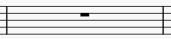
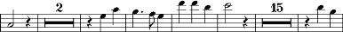
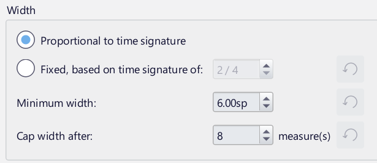
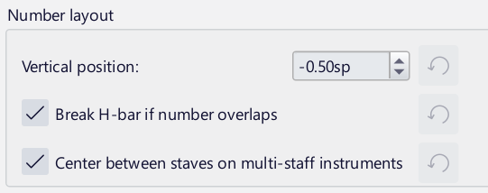
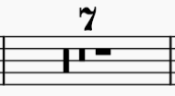

小节休止符与多小节休止符
小节休止符
小节休止符看起来像全休止符，但位于小节中央，表示整个小节（或其中的某个声部）静默：

它通常用于所有拍号（4/2 和 8/4 除外，这两种拍号常用倍全休止符代替）。
创建一个或多个整小节休止符
如果所有选中的小节都是“标准”小节，即没有自定义时值，请使用以下方法：
- 选择一个小节，或选择一段小节和谱表的范围
- 按 Del（Mac：Backspace）。
如果一个或多个小节包含自定义时值，请改用以下方法：
- 选择一个小节，或选择一段小节和谱表的范围
- 按 Ctrl+Shift+Del（Mac：Cmd+Shift+Backspace）。
在特定声部中创建整小节休止符
- 在相应声部中输入一个延伸整个小节的休止符
- 确保选中该休止符，然后按 Ctrl+Shift+Del（Mac：Cmd+Shift+Backspace）。
如果该声部只包含休止符，你可以选中第一个休止符并调用转换快捷键。
多小节休止符
多小节休止符用于表示连续多个空小节，小节数由谱表上方/下方的一个数字表示。画在谱表上的粗线称为 H-bar。

启用和禁用多小节休止符
多小节休止符可以通过快捷键 Ctrl+Shift+M（Mac：Cmd+Shift+M）开启或关闭，也可以通过勾选格式 → 样式 → 休止符中的多小节休止符来实现。
多小节休止符可以在乐谱和乐器分谱中分别独立开启/关闭。（默认情况下，它们在乐谱中关闭，在分谱中开启。）
默认情况下，如果启用了多小节休止符，任何两个或更多连续空小节都会自动转换为多小节休止符。你可以更改空小节合并为多小节休止符所需的最少数量；请参阅下文的多小节休止符样式。
断开多小节休止符
多小节休止符会在重要位置自动断开，例如双小节线、排练标记、调号或拍号变化、段落分隔等位置。
不过，你可以按如下方式选择在其他位置断开多小节休止符。
多小节休止符属性
你可以在属性面板的多小节休止符部分编辑多小节休止符的属性：
- 显示数字：是否显示小节数
- 数字偏移：调整多小节休止符数字相对于其默认位置的垂直位置。
多小节休止符样式
多小节休止符的大量样式设置可在格式 → 样式中的休止符下、多小节休止符中设置。要更改任何设置，必须先勾选多小节休止符旁边的复选框。

- 空小节最小数量：创建多小节休止符所需的最少连续空小节数。默认值为 1，这似乎不合逻辑，但这是因为在样式和间距方面，单个小节休止符仍可能被视为多小节休止符。如果你希望使用多小节休止符，但不希望单小节休止符在任何方面被视为多小节休止符，请将此值设为 2（或更高）。
- 单个空小节时（这些选项仅在空小节最小数量设置为 1 时可用）：
- 使用普通休止符：记作普通休止符（通常是全休止符）。显示数字“1”复选框指定是否显示“1”。
- 使用 H-bar：改用 H-bar。如果开启了旧式多小节休止符，此选项将不可用。

多小节休止符包含的小节越多，通常需要越多的水平空间。这些选项让你可以精确控制这种情况。
- 与拍号成比例：多小节休止符的宽度会根据其拍号而变化；例如，4/4 中的 2 小节休止符会比 3/4 中的 2 小节休止符需要更多空间
- 固定，基于……的拍号：多小节休止符的宽度不随拍号变化；例如，所有 2 小节休止符需要相同的空间量。你可以指定作为此计算基础的拍号。默认值 2/4 表示单个小节休止符（当被视为多小节休止符时）将需要与空的 2/4 小节相同的空间。
- 最小宽度：多小节休止符的最小宽度
- 超过此值后封顶宽度：多小节休止符一旦超过此小节数，将不再需要额外空间。

- 垂直位置：数字的默认垂直位置（默认在谱表上方半个间处）
- 数字重叠时断开 H-bar：当数字被偏移而与 H-bar 重叠时，是否应断开 H-bar
- 在多谱表乐器上居中于谱表之间：如果勾选，当多小节休止符出现在具有多个谱表的乐器上时，数字将显示在每对相邻谱表之间的中央（垂直位置设置将不适用）。如果未勾选，数字将显示在每个谱表上。

- 水平笔画粗细：H-bar 水平笔画的粗细
- 小节线内边距：小节线与 H-bar 垂直笔画之间的距离（两端）
- 垂直笔画粗细：H-bar 两端垂直笔画的粗细
- 垂直笔画高度：H-bar 垂直笔画的高度。

旧式多小节休止符用全休止符和倍全休止符的组合来表示。要使用此样式，请勾选复选框，以下选项将变为可用：
- 小节最大数量：以这种方式记谱的最大小节数。超过此数量后，将使用 H-bar
- 符号间距：休止符各符号之间的距离。

旧式多小节休止符的示例
另请参阅
其他与小节相关的页面：